What — A Scarlet-Sky Adventure
Embodiment of Scarlet Devil (EoSD) is the sixth Touhou Project game and the first Windows-era entry. In this vertically scrolling bullet-hell adventure, shrine maiden Reimu Hakurei or magician Marisa Kirisame investigates a strange scarlet mist covering Gensokyo.
Touhou Project is created by ZUN, the musician and game developer behind the series. His distinctive music, characters, and world-building helped inspire a large fan community.
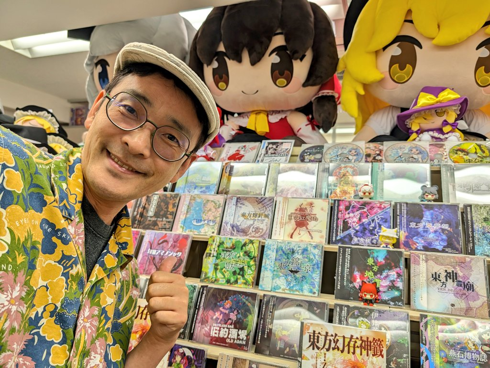
Image supplied in the project assets; it is a photograph, not AI-generated.
The sixth game, Embodiment of Scarlet Devil, begins when a scarlet mist blankets Gensokyo. Reimu and Marisa set out to discover its source.
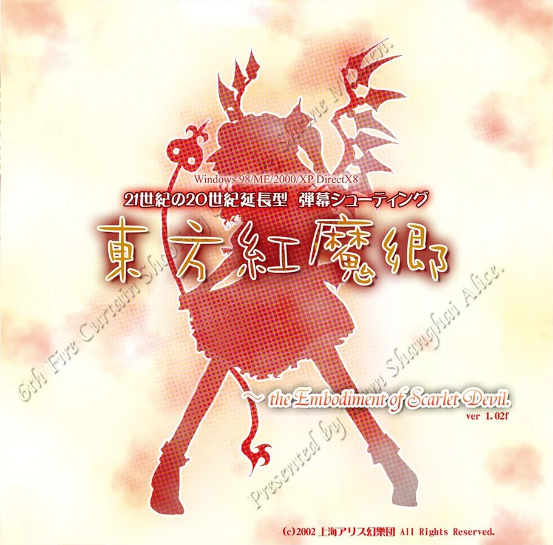
Cover image supplied in the project assets; it is existing game artwork, not AI-generated.
At a Glance
- Genre: vertically scrolling danmaku (bullet hell).
- Setting: Gensokyo, where humans and supernatural beings coexist.
- Goal: investigate the mist and survive the spell-card duels.
Who — Residents of the Scarlet Devil Mansion
Meet the heroines and mansion residents encountered on the way through EoSD. Use the controls to browse the character portraits and short introductions.
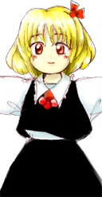
Rumia is a carefree youkai who manipulates darkness and serves as the first stage boss.
Character image supplied in the project assets; it is existing game-related artwork, not AI-generated.
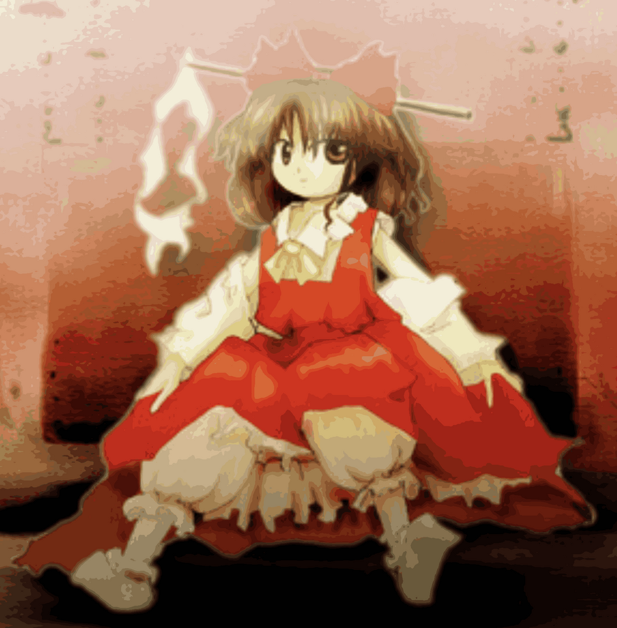
Reimu Hakurei is the Hakurei Shrine maiden, investigating the scarlet mist to restore peace to Gensokyo.
Character image supplied in the project assets; it is existing game-related artwork, not AI-generated.
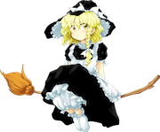
Marisa Kirisame is a human magician whose curiosity leads her to investigate the strange mist.
Character image supplied in the project assets; it is existing game-related artwork, not AI-generated.
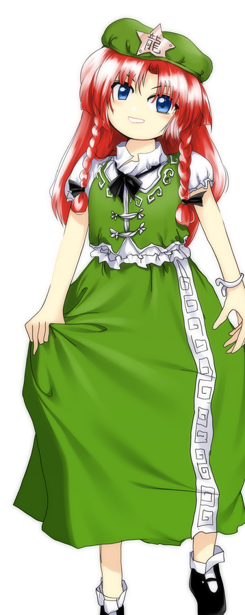
Hong Meiling is the Scarlet Devil Mansion's gatekeeper and a practitioner of martial arts.
Character image supplied in the project assets; it is existing game-related artwork, not AI-generated.
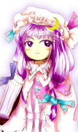
Patchouli Knowledge is a bookish magician who studies elemental magic in the mansion's library.
Character image supplied in the project assets; it is existing game-related artwork, not AI-generated.
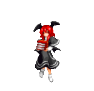
Koakuma is a small demon who appears in the mansion's library alongside Patchouli.
Character image supplied in the project assets; it is existing game-related artwork, not AI-generated.
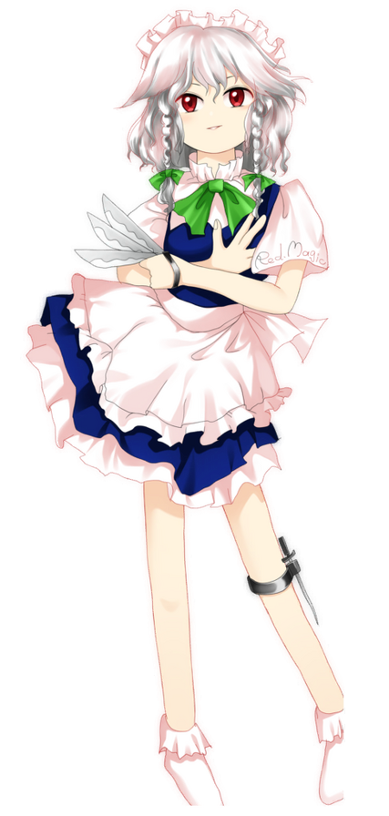
Sakuya Izayoi is the mansion's head maid, known for her precise knife-throwing and time-manipulation abilities.
Character image supplied in the project assets; it is existing game-related artwork, not AI-generated.
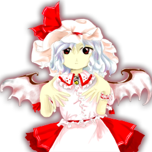
Remilia Scarlet is the vampire mistress of the mansion and the source of the scarlet mist.
Character image supplied in the project assets; it is existing game-related artwork, not AI-generated.
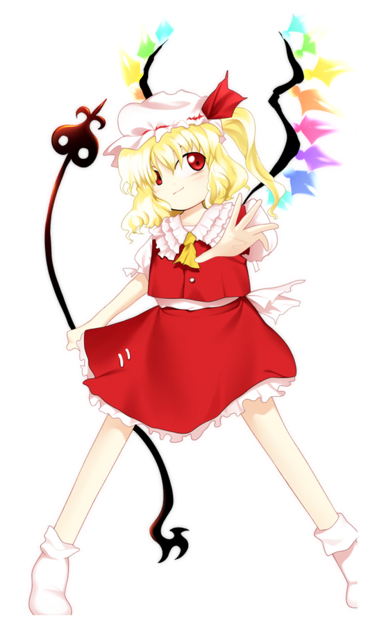
Flandre Scarlet is Remilia's younger sister, a powerful vampire who lives secluded within the mansion.
Character image supplied in the project assets; it is existing game-related artwork, not AI-generated.
When — A Good Time to Play
EoSD is a focused, level-based game, so a short practice session can be rewarding. Play when you can give the screen your attention and take a break whenever your concentration starts to fade.
A useful rhythm is to learn one stage at a time: first reach its boss, then study the attack patterns, and finally try to conserve lives and bombs for later stages.
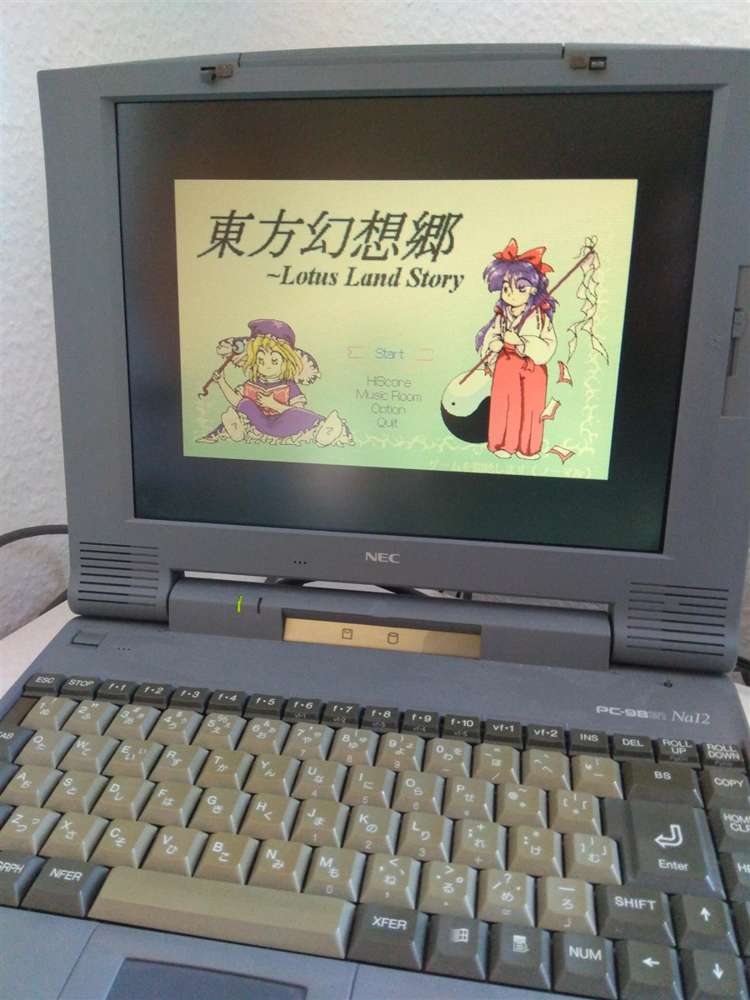
Photograph supplied in the project assets; resized for the page and not AI-generated.
A Gentle Practice Schedule
- Warm up with a stage you already know.
- Practice one difficult section or spell card in focused bursts.
- Finish with a full run only when you feel ready, not on a timer.
Where — From the Hakurei Shrine to the Mansion
The game's journey moves through a stylized Gensokyo: a shrine, forest paths, a lake, and finally the Scarlet Devil Mansion. The scrolling stages turn each location into a backdrop for changing patterns and encounters.
At home, the best play spot is a comfortable setup with a clear view of the screen and enough room for precise controls. A quiet space also makes it easier to notice the rhythm of incoming bullets.
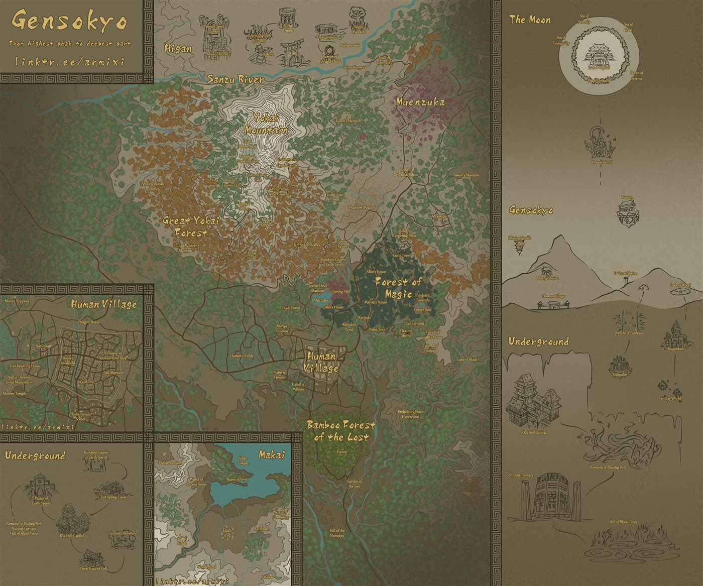
Map image supplied in the project assets; resized for the page and not AI-generated.
Places Along the Route
- The Hakurei Shrine: Reimu's home and a starting point for incidents.
- Misty Lake: a broad, open stage watched over by the mansion's gatekeeper.
- Scarlet Devil Mansion: a maze-like home where the mystery reaches its source.
How — Read the Danmaku
Keep your eyes on the spaces between bullets instead of tracking a single projectile. Small, deliberate movements help you stay in safe lanes while leaving room to dodge the next wave.
Learn the basic tools: collect items, build shot power, and use a bomb when danger overwhelms you. EoSD offers different shot types for Reimu and Marisa, so experiment to find a style that feels natural.

AI-art prompt: “Illustrate an original abstract bullet-hell pattern as orderly circles and arcs of small colored beads around a clear central lane on warm washi paper; graphic, nonviolent, no text.”
Beginner's Toolkit
- Move carefully; you usually need less movement than you think.
- Watch the player character and nearby gaps, not every bullet at once.
- Use practice mode and bombs to learn patterns without frustration.
Why — The Charm of EoSD
EoSD pairs demanding pattern-dodging with a vivid cast and a soundtrack that gives every stage its own mood. Repeated attempts can feel like solving a small visual puzzle: recognize the pattern, find the opening, and make it through.
It is also a memorable entry point to Touhou's fan community and its many interpretations of Gensokyo. The game invites mastery, but its atmosphere and characters are just as much of the appeal.
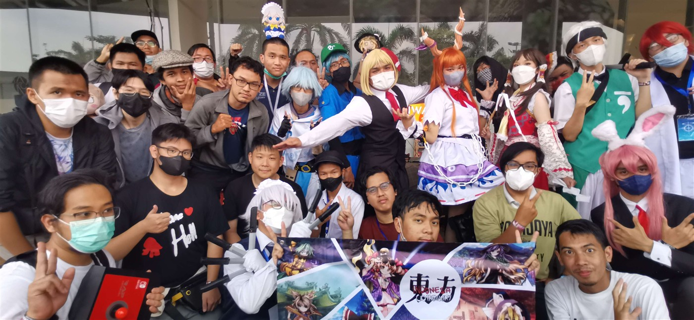
Community photograph supplied in the project assets; resized for the page and not AI-generated.
Reasons to Return
- Memorable stage themes and character themes.
- Distinct spell-card patterns that reward practice.
- A charming supernatural setting with room for discovery.
AI Prompts
The danmaku illustration in the How section is original SVG artwork created for this page with an AI image prompt.
The remaining photographs, game cover, map, and character images are existing images supplied in the project assets, not AI-generated.
The large photographs and map use optimized copies to reduce page loading while preserving their aspect ratios.
- Danmaku: orderly colored arcs framing a clear central lane on washi paper.